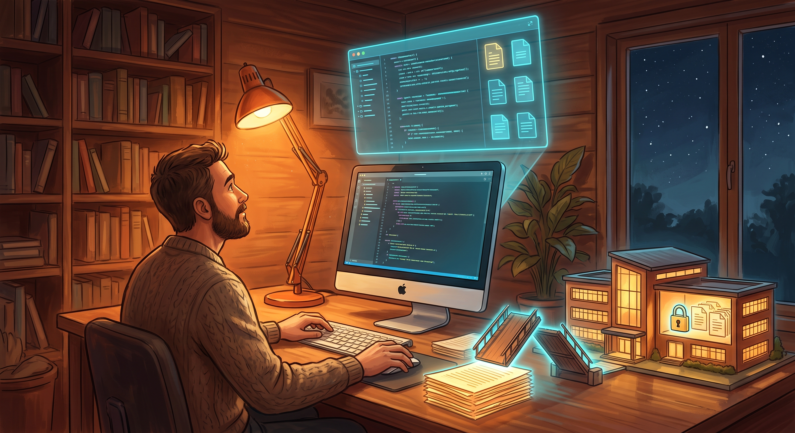

Eine Erklärung zu unseren Schul-Tools – für alle, die keine IT-Fachleute sind

So lässt sich das Prinzip zusammenfassen: Die KI hilft beim Bauen – dann zieht die Verbindung sich zurück, und die Schule läuft für sich allein.
Computer & Code
Ich arbeite selbst mit der KI als Werkzeug – sie wird nie von sich aus aktiv.
Die Brücke
Eine Verbindung besteht nur während des Bauens – nicht im laufenden Betrieb.
Schloss & Schule
Die Daten bleiben geschützt auf dem Schulserver – eigenständig, ohne KI-Zugriff.
Zwei Phasen, die nichts miteinander zu tun haben
Bei jedem unserer Tools (Anmeldungen, Wahlen, Verwaltungslisten) gibt es zwei getrennte Phasen:
Bauphase: Ich arbeite mit der KI zusammen, um den Code zu schreiben. Dabei sehe ich das Werkzeug, die KI sieht, was ich ihr zeige.
Betrieb: Die fertige Seite läuft eigenständig auf dem Schulserver. Ab diesem Moment besteht keinerlei Verbindung mehr zur KI – Schüler:innen, Kolleg:innen und Eltern haben es ausschließlich mit dem Schulserver zu tun.
Wo die Daten wirklich liegen
Alle Daten liegen als Dateien direkt auf dem Schulserver (IONOS) – nicht in einer Cloud eines Drittanbieters.
Es gibt keine externe Datenbank, keine Weitergabe an Dienste außerhalb der Schule.
Es werden keine externen Schriften, Tracker oder Werbe-Bausteine eingebunden, die beim Aufruf der Seite selbst Daten nach außen senden könnten.
Wer Zugriff hat – und wer nicht
Der Verwaltungsbereich ist durch ein Passwort geschützt, das nur als Hash gespeichert wird (nicht im Klartext lesbar – auch nicht für mich).
Der Ordner mit den echten Daten liegt außerhalb des öffentlich erreichbaren Bereichs.
Uploads auf den Server laufen verschlüsselt (SFTP), nicht über unverschlüsseltes FTP.
Ich lade nie von mir aus etwas hoch – jede Änderung am Live-Server bestätige ich vorher einzeln.
Was die KI wirklich tut – und was nicht
Genau hier setzt oft die größte Sorge an: Kann eine KI unkontrolliert Daten sammeln oder sich selbstständig machen? Bei der Art, wie wir arbeiten, ist das technisch ausgeschlossen:
Die KI wird ausschließlich auf meine Anweisung hin aktiv – nie von selbst, nie im Hintergrund.
Sie hat keinen dauerhaften Zugriff auf den Schulserver und keine gespeicherten Zugangsdaten.
Für riskante Schritte (Datei-Uploads, Löschen, Versenden) muss sie mich jedes Mal aktiv um Erlaubnis fragen – das ist keine Zusicherung, sondern eine feste Regel des Programms, mit dem ich arbeite.
Zugangsdaten für den Server liegen ausschließlich lokal bei mir, nicht im Zugriff der KI.
Konkret geprüft: In meinem Konto (Claude Pro, Jahresabo) ist die Einstellung „Hilf uns, unsere KI-Modelle zu verbessern“ bewusst ausgeschaltet. Das heißt, meine Chats und Coding-Sitzungen werden nicht zum Training der KI-Modelle verwendet – Stand: geprüft im September 2026 unter den Datenschutz-Einstellungen des Kontos.
Bereits umgesetzte Verbesserungen
Jährliche Datenimporte (z. B. Sportkurswahl, Prüfungskommissionen) laufen inzwischen über eine Import-Funktion direkt auf der Webseite – die Daten laufen dabei nicht mehr über eine KI-Sitzung.
Bei der Entwicklung arbeite ich grundsätzlich mit Testdaten statt echten Namen.
Ausblick
Diese Erklärung ist bewusst einfach und bildhaft gehalten. Bei Bedarf lässt sie sich zu einem förmlichen Verfahrensverzeichnis nach Art. 30 DSGVO ausbauen – mit den Kategorien betroffener Personen, Verarbeitungszwecken, Speicherfristen und technisch-organisatorischen Maßnahmen im Detail.